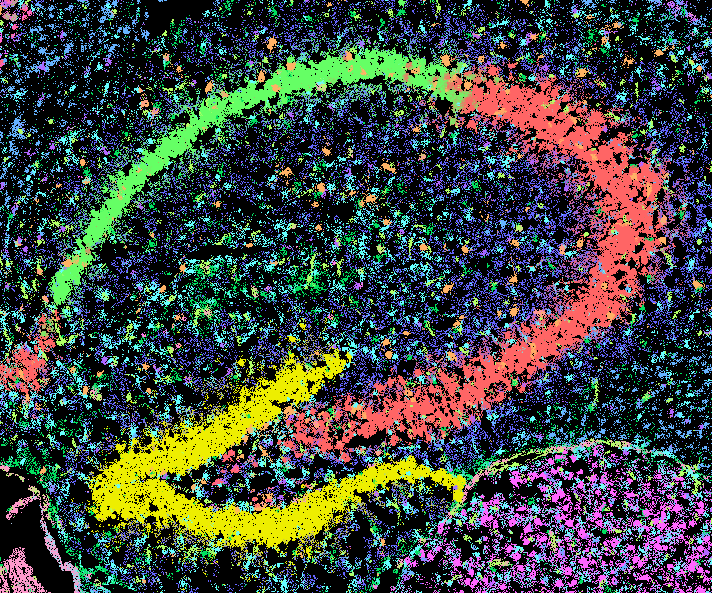

Vizgen MERSCOPE Starter Tutorial¶
The input is an SGE dataset from the adult mouse hippocampus, extracted by masking a coronal brain section (Slice Number: 2; Replicate Number: 1; file: detected_transcripts.csv) from Vizgen MERSCOPE Neuroscience Showcase.
It includes steps of input preparation, SGE format conversion, FICTURE analysis, asset packaging, and data upload.
Set Up the Environment¶
1 2 3 4 5 6 7 8 9 10 11 12 13 14 15 16 17 18 19 20 21 22 | |
Prepare Input¶
Data Access¶
The example data is hosted on Zenodo. Follow the commands below to download the example data.
1 2 3 | |
File Format¶
The MERSCOPE input SGE includes one comma‑delimited text file in the following format:
CSV File Format
1 2 3 4 | |
- Column 1: Unique numeric index for each transcript within a field of view (non-consecutive, ascending).
barcode_id: Zero-based index of the transcript barcode in the codebook; forms a composite key withfov.global_x: Transcript x coordinates (µm) in the experimental region; may be negative due to alignment.global_y: Transcript y coordinates (µm) in the experimental region; may be negative due to alignment.global_z: Zero‑based z‑position index.x: The x-coordinate of the transcript (µm), within the coordinate space of the field of view.y: The y-coordinate of the transcript (µm), within the coordinate space of the field of view.fov: Zero-based field of view index; forms a composite key withbarcode_id.gene: Gene name associated with the transcript.
Define ID and Parameters¶
1 2 3 4 5 6 7 8 | |
How to define Scaling Factors for MERSCOPE?
The MERSCOPE example data currently used here provides SGE in µm. Define the scaling factor from coordinate units to micrometers as 1.
SGE Format Conversion¶
Convert the raw input to the unified SGE format. See more details in its Reference page.
1 2 3 4 5 6 7 8 9 10 | |
| Parameter | Required | Type | Description |
|---|---|---|---|
--platform |
required | string | Platform (options: "10x_visium_hd", "seqscope", "10x_xenium", "bgi_stereoseq", "cosmx_smi", "vizgen_merscope", "pixel_seq", "generic") |
--in-csv |
required | string | Path to the input TSV/CSV file |
--units-per-um |
required | float | Scale to convert coordinates to microns (default: 1.0) |
--out-dir |
required | string | Output directory for the converted SGE files |
--makefn |
string | File name for the generated Makefile (default: sge_convert.mk) |
|
--exclude-feature-regex |
regex | Pattern to exclude control features | |
--sge-visual |
flag | Enable SGE visualization step (generates diagnostic image) (default: FALSE) |
|
--spatula |
string | Path to the spatula binary (default: spatula) |
|
--n-jobs |
int | Number of parallel jobs for processing (default: 1) |
FICTURE Analysis¶
Compute spatial factors using punkst (FICTURE2). See more details on the Reference page.
1 2 3 4 5 6 7 8 9 10 11 12 13 14 15 | |
| Parameter | Required | Type | Description |
|---|---|---|---|
--main |
required 1 | flag | Enable CartLoader to run all five steps |
--in-transcript |
required | string | Path to input transcript-level SGE file |
--out-dir |
required | string | Path to output directory |
--width |
required | int or comma-separated list | LDA training hexagon width(s) |
--n-factor |
required | int or comma-separated list | Number of LDA factors |
--makefn |
string | File name for the generated Makefile (default: run_ficture2.mk ) |
|
--in-feature |
string | Path to input feature file | |
--in-minmax |
string | Path to input coordinate min/max file | |
--cmap-file |
string | Path to color map file | |
--exclude-feature-regex |
regex | Pattern to exclude features | |
--spatula |
string | Path to the spatula binary (default: spatula) |
|
--ficture2 |
string | Path to the punkst directory (defaults to punkst repository within submodules directory of CartLoader) |
|
--n-jobs |
int | Number of parallel jobs (default: 1) |
|
--threads |
int | Number of threads per job (default: 1) |
1: CartLoader requires the user to specify at least one action. Available actions include: --tile to run tiling step; --segment to run segmentation step; --init-lda to run LDA training step; --decode to run decoding step; --summary to run summarization step; --main to run all above five actions.
CartLoader Asset Packaging¶
Generate pmtiles and web-compatible tile directories. See more details in Reference page.
1 2 3 4 5 6 7 8 9 10 11 | |
1 2 3 4 5 6 7 8 9 10 11 | |
| Parameter | Required | Type | Description |
|---|---|---|---|
--out-dir |
required | string | Path to the output directory for PMTiles and web tiles |
--id |
required | string | Dataset ID used for naming outputs and metadata |
--fic-dir |
string | Path to FICTURE outputs (enables factor layers + molecule–factor joins) | |
--sge-dir |
string | Path to SGE outputs from sge_convert (enables SGE-only packaging) |
|
--in-sge-assets |
string | File name of SGE assets JSON/YAML in --sge-dir (default: sge_assets.json) |
|
--in-fic-params |
string | File name of FICTURE params JSON/YAML in --fic-dir (default: ficture.params.json) |
|
--makefn |
string | File name for the generated Makefile (default: run_cartload2.mk) |
|
--spatula |
string | Path to the spatula binary (default: spatula) |
|
--pmtiles |
string | Path to the pmtiles binary (default: pmtiles) |
|
--tippecanoe |
string | Path to the tippecanoe binary (default: tippecanoe) |
|
--n-jobs |
int | Number of parallel jobs (default: 1) |
|
--threads |
int | Number of threads per job (default: 4) |
Upload to Data Repository¶
Choose a data repository to host/share your output
CartLoader supports two upload options (AWS and Zenodo) for storing PMTiles of SGE and spatial factors in a data repository.
Choose the one that best suits your needs.
Upload the generated CartLoader outputs to your designated AWS S3 directory:
1 2 3 4 5 6 7 8 | |
| Parameter | Required | Type | Description |
|---|---|---|---|
--in-dir |
required | string | Path to the input directory containing the CartLoader asset packaging output |
--s3-dir |
required | string | Path to the target S3 directory for uploading |
--aws |
string | Path to the AWS CLI binary | |
--n-jobs |
int | Number of parallel jobs |
Upload the generated CartLoader outputs to your designated Zenodo deposition or a new deposition.
1 2 3 4 5 6 7 8 9 | |
| Parameter | Required | Type | Description |
|---|---|---|---|
--in-dir |
required | string | Path to the input directory containing the CartLoader asset packaging output |
--upload-method |
required | string | Method to determine which files to upload. Options: all to upload all files in --in-dir; catalog to upload files listed in a catalog YAML file; user_list to upload files explicitly listed via --in-list |
--catalog-yaml |
string | Required if --upload-method catalog. Path to catalog.yaml generated in run_cartload2. If absent, uses the catalog in the input directory specified by --in-dir. |
|
--zenodo-token |
required | string | Path to your Zenodo access token file |
--title |
required | string | Required when creating a new deposition (i.e., if --zenodo-deposition-id is omitted). Title for the new Zenodo deposition. |
--creators |
required | list of str | List of creators in "Lastname, Firstname" format. |
Output Data¶
-

View/Explore¶
The outputs are available in both CartoScope and Zenodo.
See output details in the reference pages for run_ficture2 and run_cartload2.